Artist experience
13 screens · authenticated · the heart of the product
Everything behind login for a normal artist. Shares a sticky top nav (~10 links).
This is where most of your time — and the product's "feel" — should go.
04
Dashboard
/dashboard
The home base: level + XP ring, streak / XP / badges / rank stats, "your next move", daily & weekly goals, rank tiles, a toolkit grid, milestone progress bars, and earned achievements.
localhost:3000/dashboard
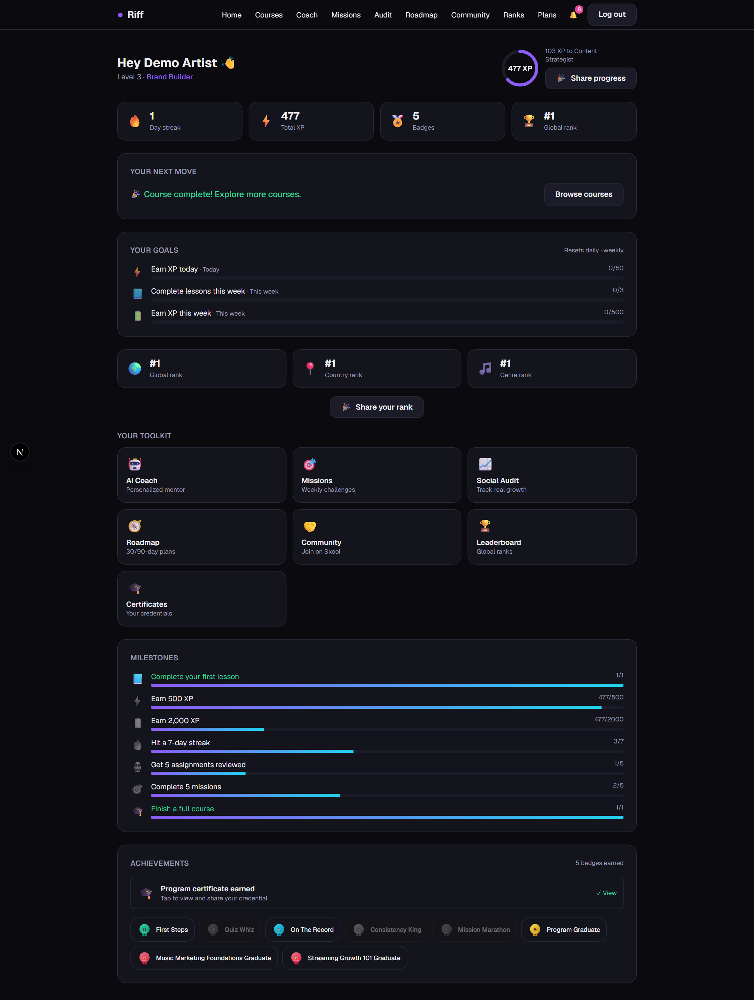
Notes
- The densest and most important screen — nearly all gamification lives here (XP ring, streaks, milestones, badges).
- Uses the signature violet→cyan gradient on every progress bar; stat tiles are emoji + number + label.
- Opportunity: visual hierarchy — right now every block has equal weight. What should an artist see first?
- Opportunity: this is the celebration surface. Level-ups, streak flames, badge unlocks all want delightful motion and richer art.
- Opportunity: long single column — needs a deliberate mobile stacking + a desktop layout that isn't just "everything centered."
05
Courses
/courses
The catalog of available tracks/courses with progress.
localhost:3000/courses
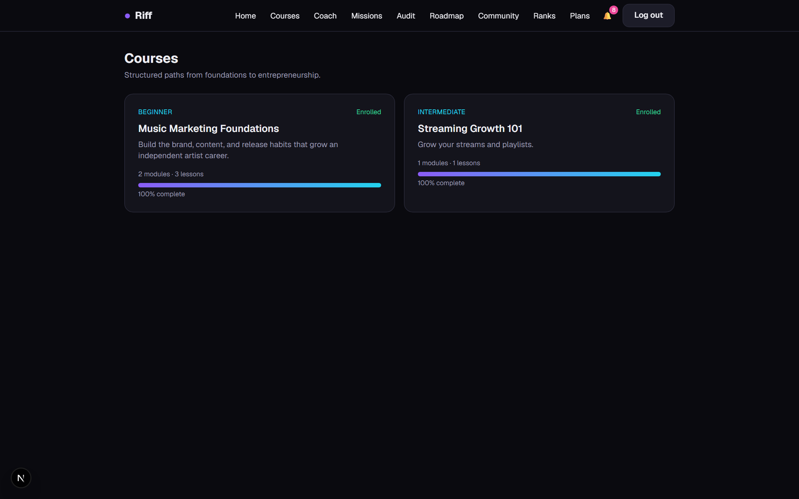
Notes
- Card list; course art is minimal/placeholder.
- Opportunity: course thumbnails/cover art system, progress + lock states, filtering as the catalog grows.
06
Course detail
/courses/[slug]
A course's modules and lessons, with gated progression — a lesson unlocks only when the previous one is complete.
localhost:3000/courses/…
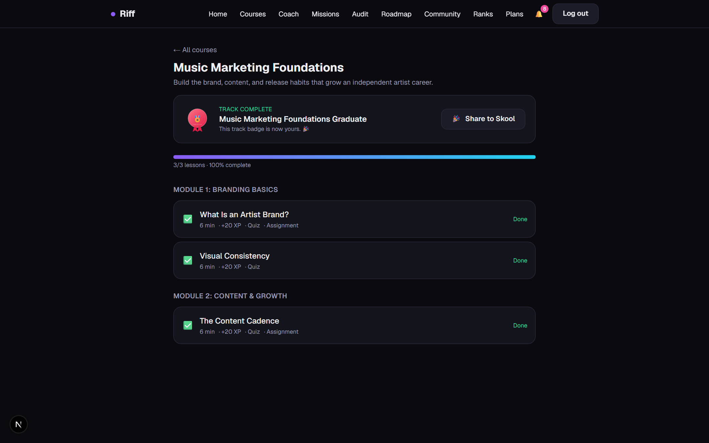
Notes
- Locked vs. unlocked vs. completed lesson states are a core interaction — currently minimal styling.
- Opportunity: make progression legible and motivating (path/track metaphor, clear lock affordances).
07
Lesson player
/learn/[lessonId]
Where the learning loop happens: lesson content → quiz → assignment submission → AI feedback, with celebration toasts on XP/level/badge events.
localhost:3000/learn/…
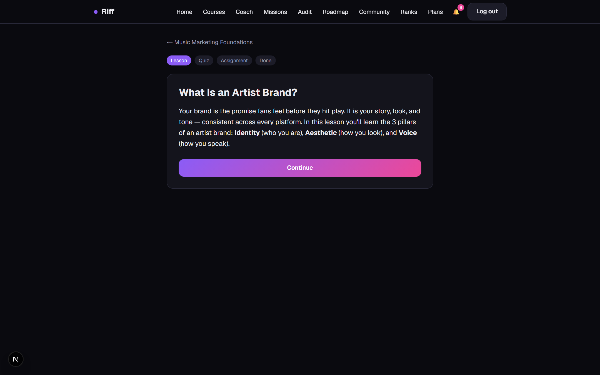
Notes
- Multiple modes in one screen (read, quiz, submit, results). The reward/celebration moments live here too.
- Opportunity: the single most-used flow — reading comfort, quiz interaction, submit affordance, and the "you earned X" moment all deserve care.
08
AI Coach
/coach gated state
The AI Coach is a Pro feature. Because the demo account isn't community-verified, this capture shows the Pro-gate (ProGate component), not the chat itself.
localhost:3000/coach
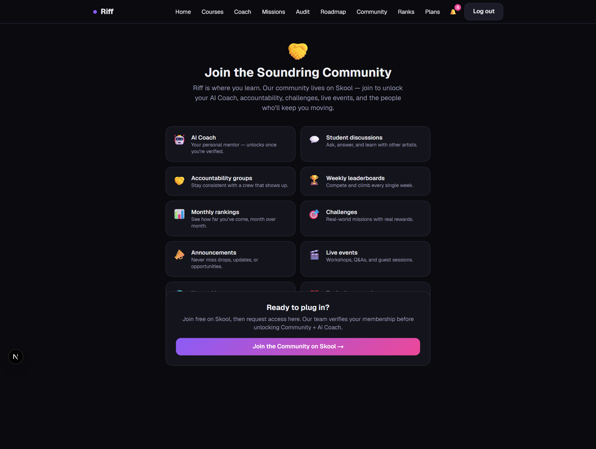
Notes
- This is the reusable upsell / gate pattern (also fronts Community) — a key conversion surface worth designing well.
- Behind the gate: a streaming chat mentor UI (token-by-token replies, 👍/👎 feedback) — worth asking a dev to unlock a verified account so you can see it.
- flagNaming: this screen says "Soundring" while the rest of the app says "Riff." The product name is inconsistent across the codebase — worth locking before design.
09
Weekly missions
/missions
Rotating real-world challenges that award XP + streak on completion.
localhost:3000/missions
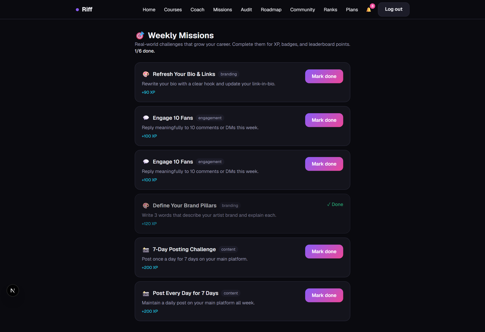
Notes
- List of mission cards with reward values and completion state.
- Opportunity: make missions feel like quests — progress, categories, reward reveal.
10
Social media audit
/audit
Connect platforms and get four scores — Marketing, Branding, Growth, Consistency — with month-over-month deltas and AI recommendations.
localhost:3000/audit
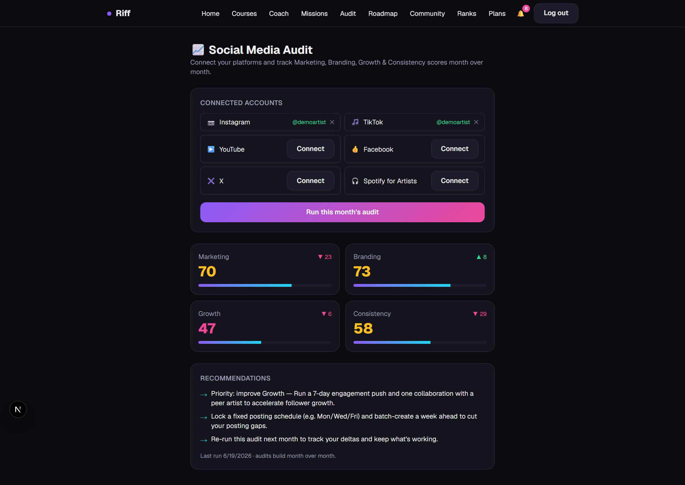
Notes
- Data-viz heavy: four scores + trend deltas. Prime territory for a clean scorecard / charts system.
- Opportunity: a proper data-visualization language (gauges, deltas, sparklines) — currently basic numbers.
11
Career roadmap
/roadmap
Generates personalized 30/90-day & 6/12-month growth plans with milestones and concrete tasks.
localhost:3000/roadmap
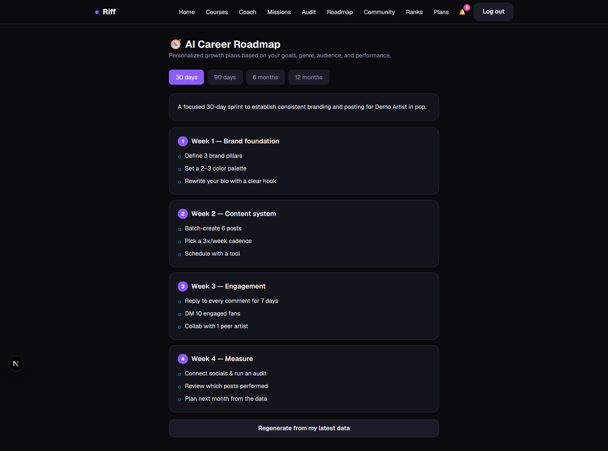
Notes
- Timeline/plan content — likely an empty or generate-first state until the artist runs it.
- Opportunity: a timeline/roadmap visual metaphor; empty-state + generating states to design.
12
Community
/community gated state
Forums, threads, peer feedback, win showcases, accountability groups. Also a Pro feature gated behind Skool-membership verification.
localhost:3000/community

Notes
- Community proper lives on Skool; this in-app area surfaces groups/threads once verified.
- Opportunity: forum/thread reading & posting UI, group cards, and the share-a-win flow.
13
Leaderboard
/leaderboard
Composite ranking with global / country / genre scopes.
localhost:3000/leaderboard
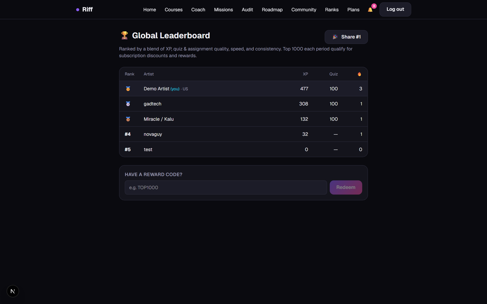
Notes
- Ranked table with scope tabs. Competitive surface — wants podium/rank flair.
- Opportunity: top-3 treatment, the current user's row highlight, rank movement indicators.
14
Pricing / plans
/pricing
Free / Pro / Premium plan comparison (Stripe-backed).
localhost:3000/pricing
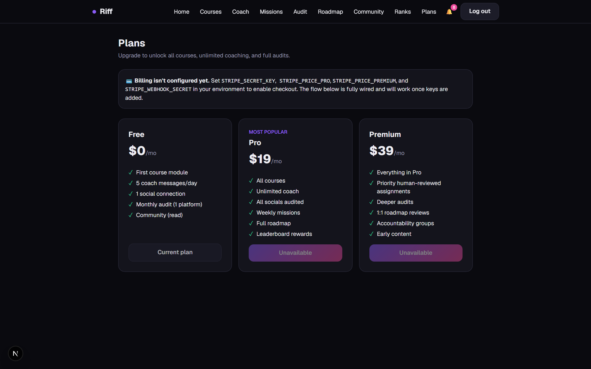
Notes
- Plan cards with feature lists. A conversion-critical page.
- Opportunity: plan-comparison clarity, "most popular" emphasis, feature-matrix design.
15
Certificates & badges
/certificates
Earned journey badges, per-course completion badges, and the program certificate.
localhost:3000/certificates
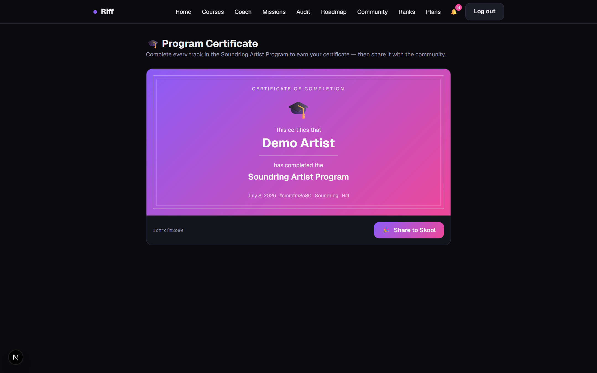
Notes
- Badge and certificate art are placeholder SVGs (in
public/badges/ & public/certificate/) — designed to be swapped file-for-file with no code changes.
- Opportunity: a self-contained, high-value deliverable — design the full badge set + certificate artwork.
16
Billing settings
/settings/billing unconfigured
Subscription / billing management. Shows a "not configured" state until Stripe keys are set.
localhost:3000/settings/billing
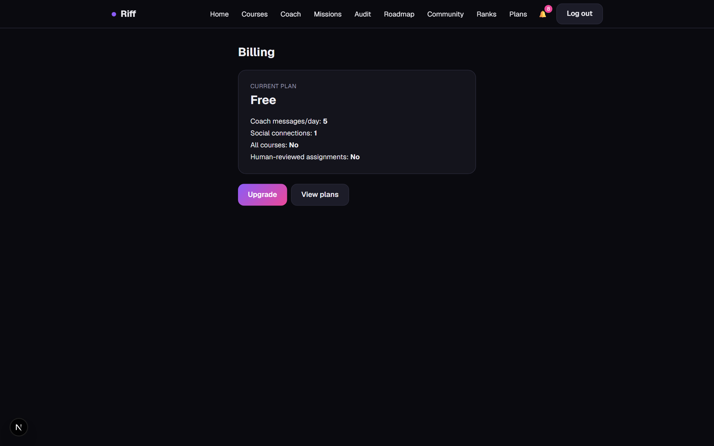
Notes
- There's no general Settings/Profile area yet — billing is the only settings page.
- Opportunity: a broader account/settings information architecture (profile, notifications, socials, billing).
Projects — Kanban boards
2 screens · authenticated · NEW
Native Trello-style project management. Boards are created from templates (Content Calendar,
Release Planner, Pitch Tracker, Outreach CRM, Collaboration) that seed the right columns + labels. This is
the most interaction-dense surface in the product.
24
Projects — list & dashboard
/boards
A personal dashboard (due today / overdue / upcoming, project progress, team workload, recently active) with a global search box, above the grid of boards. "+ New board" opens a template picker.
localhost:3000/boards
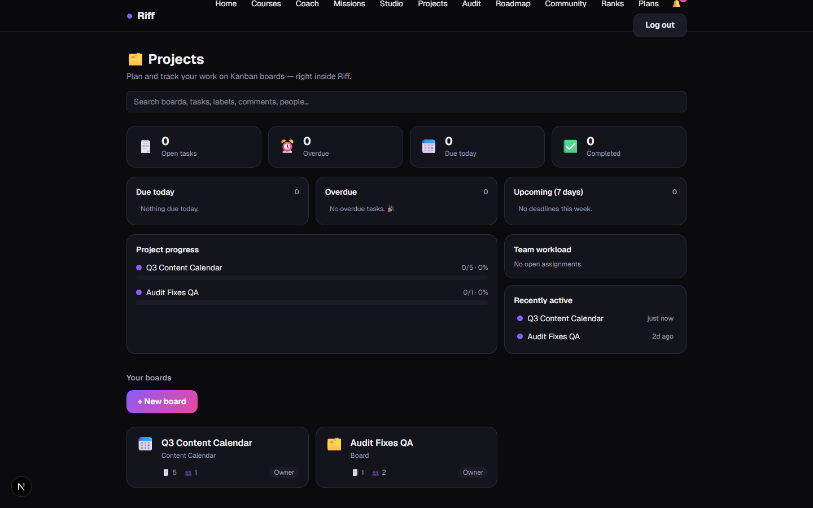
Notes
- Reuses the .card + Stat/ProgressBar primitives — consistent with the rest of the app.
- Template picker is a card gallery (icon + name + track tag).
- Opportunity: dense information hierarchy — stat tiles, task lists, progress, and the board grid compete for attention; a clear visual rhythm would help.
25
Board view
/boards/[id]
Columns + cards with drag-and-drop, a filter bar (text/label/assignee/priority), and header panels (Members, Activity, Archived). Clicking a card opens a rich detail drawer (checklists, labels, assignees, due dates, comments + @mentions, attachments, watch, duplicate/archive).
localhost:3000/boards/…
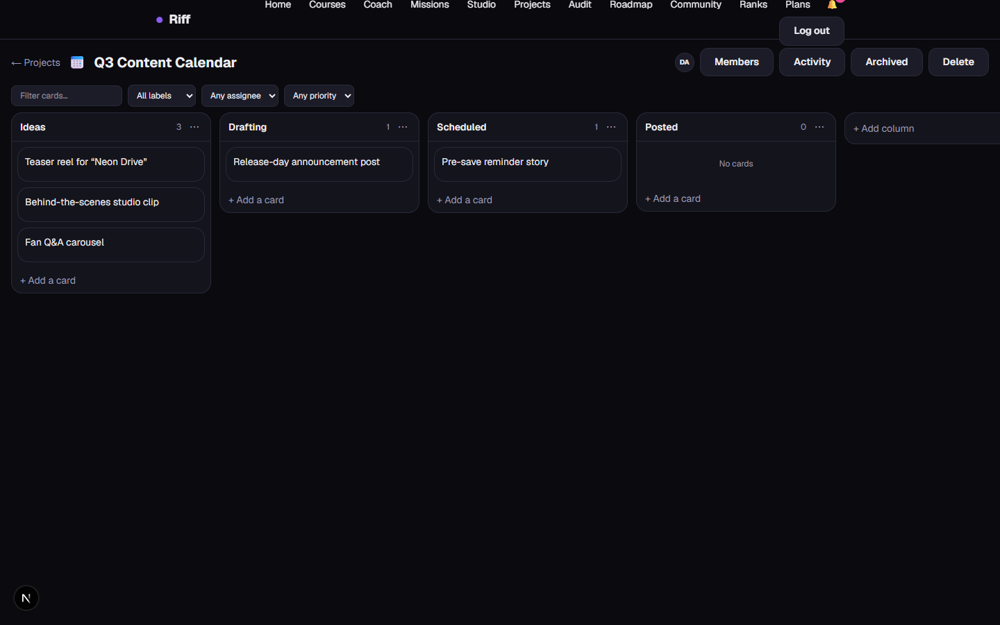
Notes
- Horizontal-scrolling columns; native HTML5 drag-and-drop on desktop (tap-to-move on mobile).
- The card drawer (CardModal.tsx) packs the most controls of any screen in the product.
- Opportunity: the whole Kanban interaction model — card design, drag affordances, the drawer's information density, and a real mobile pattern — is open canvas.
Studio — execution tools
7 screens · authenticated · NEW
Where artists do the work — AI writing tools, business managers, and a public page — so they
never leave for Canva/Buffer/Mailchimp/Linktree/spreadsheets. /studio is a hub launcher; the
rest are individual tools (Broadcasts, Merch & Gigs, Bookings, Goals, Caption Generator are not pictured
but share the same card/list patterns).
26
Studio hub
/studio
A launcher grouping every tool — Career Dashboard (featured), AI tools, and "assets & business" managers — as track-tagged cards.
localhost:3000/studio
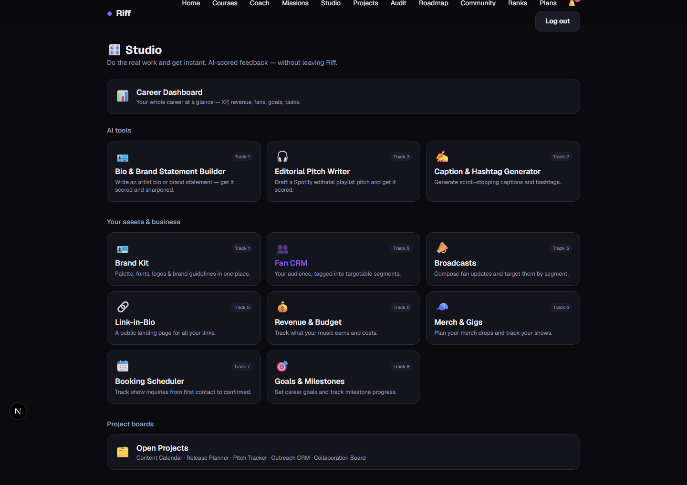
Notes
- Card grid with emoji icons + "Track N" tags mapping each tool to a course track.
- Opportunity: this hub + the nav are the answer to the app's IA problem — a launcher pattern could absorb the crowded top nav.
27
Career Dashboard
/studio/dashboard
A read-only overview aggregating XP/level, streak, badges, net revenue, fans, boards, open tasks, and goal progress from across the whole platform.
localhost:3000/studio/dashboard
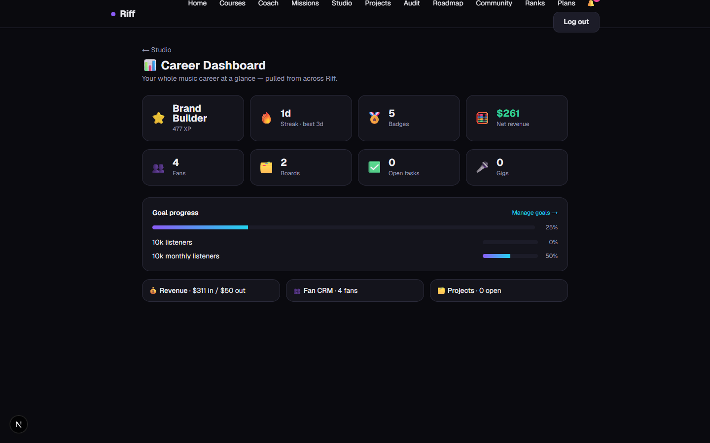
Notes
- Pulls live data from many features into one KPI view — the "single pane of glass" for a career.
- Opportunity: prime surface for data-viz polish (sparklines, trends, goal rings).
28
AI Builder (Bio / Editorial Pitch)
/studio/bio
Write a bio/pitch, hit "Get Riff Score", and get a 0–100 score + strengths, weaknesses, recommendations, and next actions. Keeps multiple drafts. Same pattern powers the Editorial Pitch Writer and the Caption Generator.
localhost:3000/studio/bio
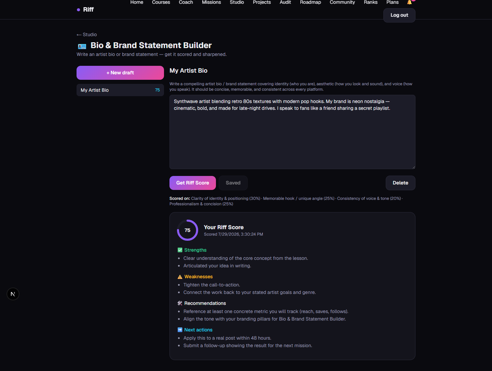
Notes
- Two-pane: draft list + editor; the score uses the existing ProgressRing.
- AI is real when a key is set, else a deterministic mock — the screen always looks populated.
- Opportunity: the score + feedback reveal is a delight moment (motion, celebratory framing) like the gamification screens.
29
Brand Kit
/studio/brand-kit
Colour palette (with pickers), fonts, uploaded logos/assets, and markdown brand guidelines — one reusable source of truth.
localhost:3000/studio/brand-kit
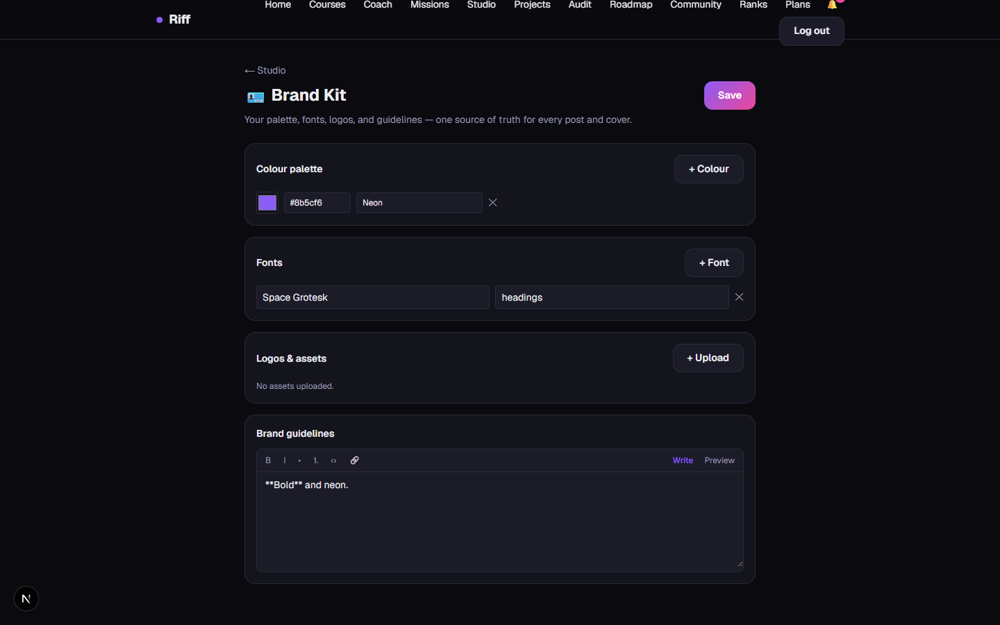
Notes
- Sectioned editor (colours / fonts / assets / guidelines) with inline add/remove rows.
- Opportunity: could become a beautiful visual "brand board"; today it's utilitarian form rows.
30
Fan CRM
/studio/fans
A contact list where tags become filterable segments (clickable chips with counts). Feeds the Broadcasts tool's targeting.
localhost:3000/studio/fans
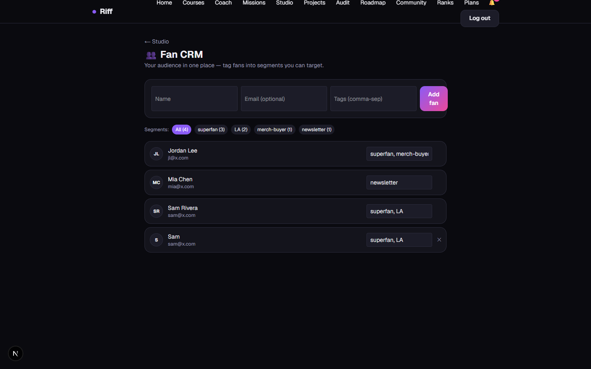
Notes
- Segment chips + inline-editable tag fields; avatar initials as placeholders.
- Opportunity: list-heavy — a CRM deserves clear row rhythm, bulk actions, and empty-state design.
31
Revenue & Budget
/studio/finance
Income/expense ledger with running totals (income · expenses · net) and a per-category breakdown.
localhost:3000/studio/finance
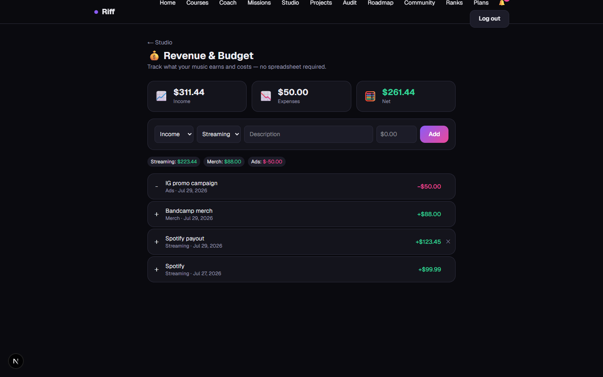
Notes
- Stat tiles for the totals; net is colour-coded green/pink.
- Opportunity: add charts (income vs expense over time, category donut) — currently numbers only.
32
Link-in-Bio editor
/studio/link-in-bio
Edit handle, title, bio, theme, and links — with a live preview — then Publish to a public page.
localhost:3000/studio/link-in-bio
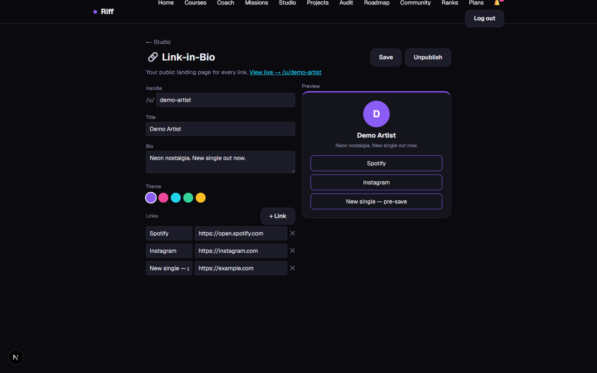
Notes
- Split editor + live preview; theme picker is a row of accent swatches.
- Opportunity: a Linktree competitor lives or dies on template/theme variety — big design surface (see the public output next).
Public — the artist's page
1 screen · public · NEW
The only unauthenticated, outward-facing screen besides the landing page — what an artist's
fans actually see. It should feel like the artist's page, themed by their accent colour, not like Riff.
33
Link-in-Bio public page
/u/[handle]
The published landing page: avatar, name, bio, and themed link buttons. Self-contained, no app chrome, "Made with Riff" footer.
localhost:3000/u/demo-artist
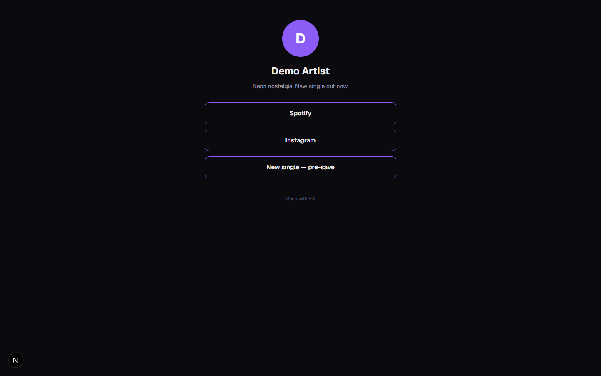
Notes
- Renders with inline styles (independent of the app's Tailwind) so it stands alone; themed by the artist's chosen accent.
- Link hrefs are scheme-coerced to https and marked rel="nofollow".
- Opportunity: this is a marketing surface for the artist — multiple themes/layouts, cover art, embeds, and social-preview (OG) design are all wide open.
Admin back office
7 screens · role-gated
A separate area for staff (admin / reviewer / moderator). Note it uses a left sidebar —
a different navigation paradigm from the artist app's top nav. Lower design priority than the artist
experience, but part of the package. (More admin screens exist — course editor, content queue, import —
captured here are the primary ones.)
17
Admin overview
/admin
KPI tiles, 30-day activity, an engagement funnel, and a "needs attention" panel.
localhost:3000/admin
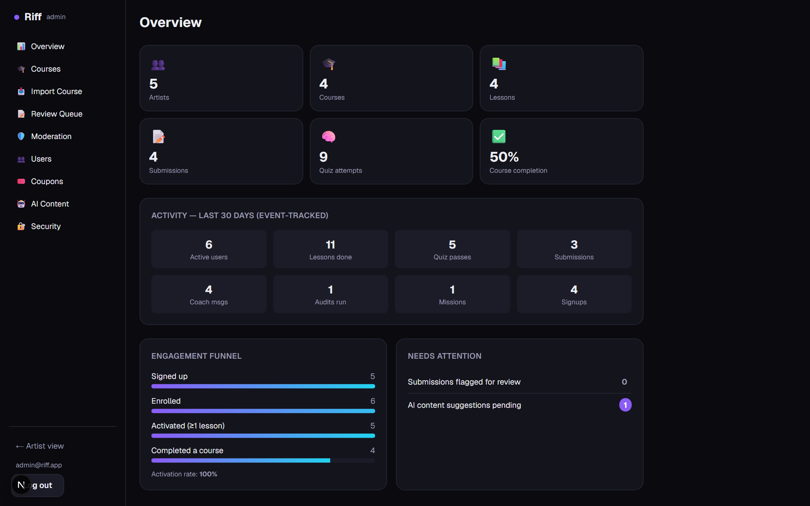
Notes
- Left sidebar shell + KPI/analytics dashboard. Most "product-like" admin screen.
- Opportunity: a dashboard/data-viz system that could also feed the artist-facing audit screens.
18
Course authoring
/admin/courses
Create/edit courses, modules, lessons, quizzes, and assignments; publish/draft toggle.
localhost:3000/admin/courses
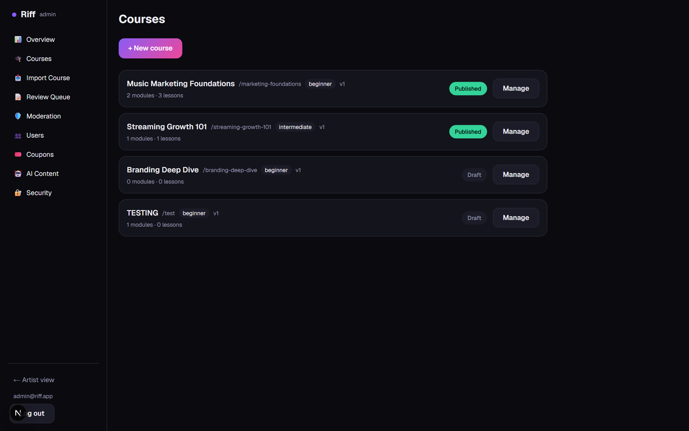
Notes
- Content-management list; the full builder lives on the course-edit route.
- Opportunity: table/list patterns, form design for the authoring flow.
19
Assignment review queue
/admin/submissions
Where reviewers confirm or override flagged AI assignment scores.
localhost:3000/admin/submissions
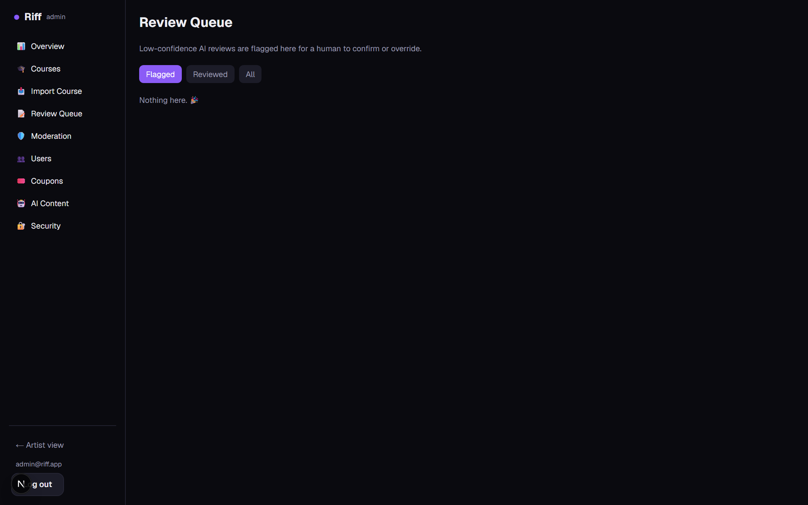
Notes
- A queue/triage workflow — human-in-the-loop over AI scores.
- Opportunity: efficient review UI (side-by-side submission + score + action).
20
Moderation queue
/admin/moderation
Reported threads/posts/users, content removal, user blocking.
localhost:3000/admin/moderation
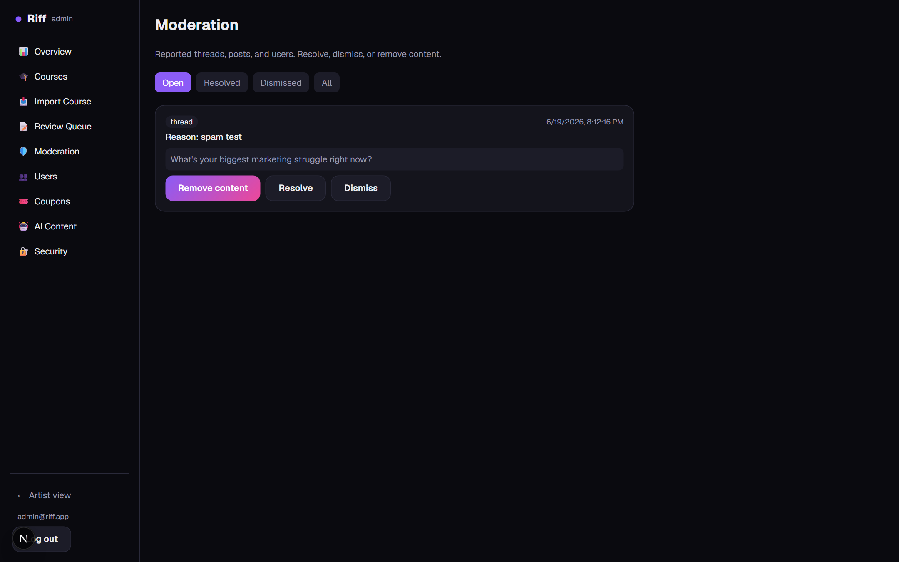
Notes
- Report triage list with actions.
- Opportunity: clear action affordances + status states for a moderation workflow.
21
Users
/admin/users
Manage roles and suspensions (with a self-suspend guard). Paginated.
localhost:3000/admin/users
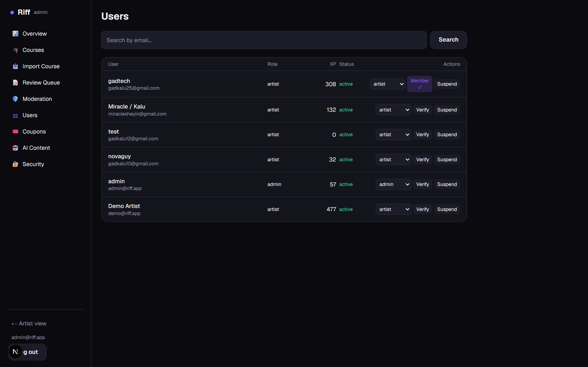
Notes
- A data table with row actions + pagination.
- Opportunity: a reusable table system (sort, filter, row actions) used across admin.
22
Coupons & rewards
/admin/coupons
Create coupons and issue Top-1000 rewards.
localhost:3000/admin/coupons
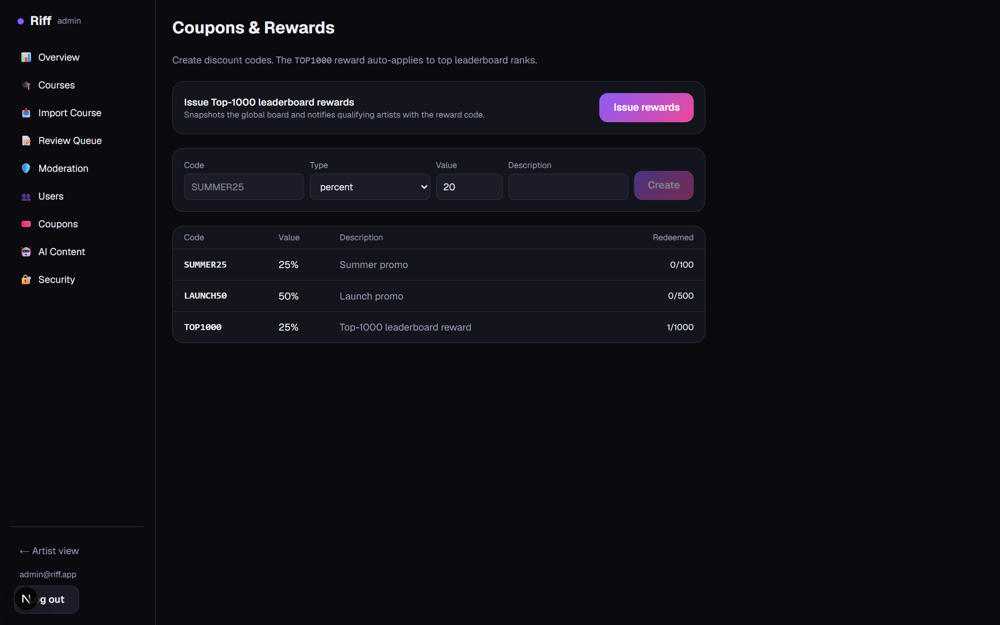
Notes
- Form + list management screen.
- Opportunity: consistent form + list patterns shared with the rest of admin.
23
Security / MFA
/admin/security
Admins enable TOTP two-factor (authenticator app) here.
localhost:3000/admin/security
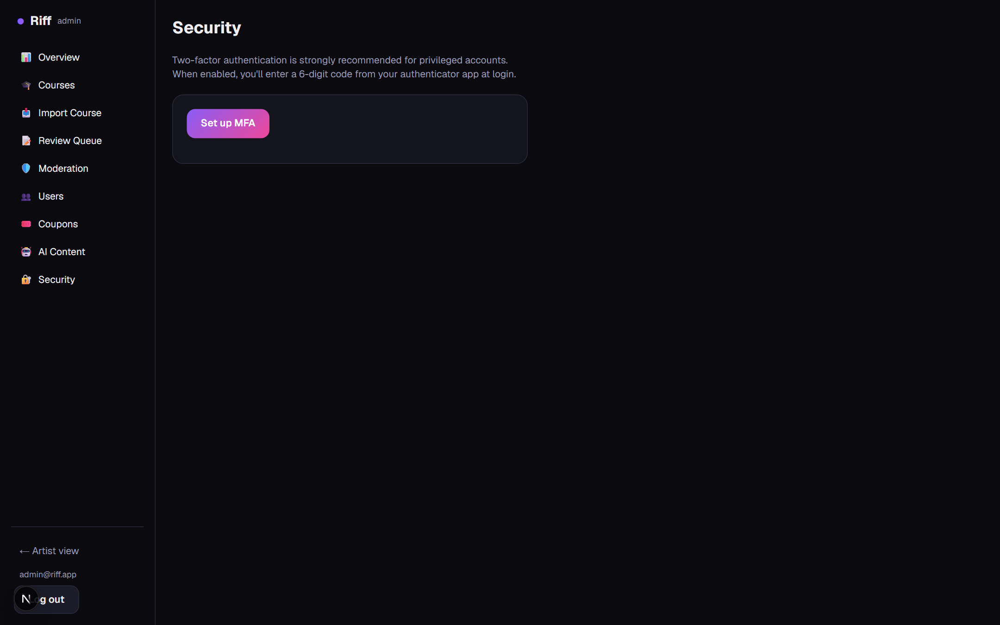
Notes
- Setup flow (QR/secret + verify) — a small but real multi-step interaction.
- Opportunity: clean, trustworthy security-setup UI patterns.